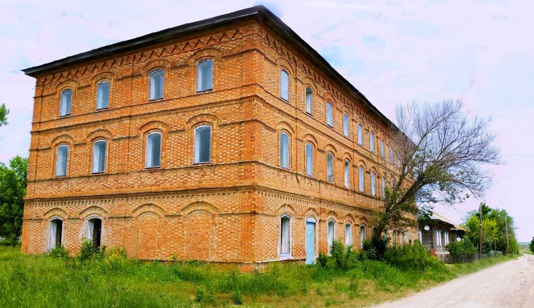

Über Wolgawurzeln
Ein Fachportal zur Geschichte der Russlanddeutschen und ein Forschungsdienst für ihre Familien. Quellen statt Vermutungen, jede Angabe mit Beleg.

Was Wolgawurzeln ist
Wolgawurzeln ist ein Fachportal für russlanddeutsche Familiengeschichte. Es verbindet zwei Dinge: ein frei zugängliches Nachschlagewerk zur Geschichte der Wolgadeutschen, Schwarzmeerdeutschen, Wolhyniendeutschen, Kaukasusdeutschen und Mennoniten, und einen Forschungsdienst, der für einzelne Familien in Archiven in Deutschland und Russland recherchiert.
Das Portal richtet sich an die Nachfahren der Familien, die 1941 deportiert wurden, und an die Nachfahren früherer Auswanderer: in Deutschland, in Russland und Kasachstan, in Nord und Südamerika. Anfragen werden auf Deutsch, Russisch und Englisch beantwortet, recherchiert wird auf Deutsch und Russisch, weil die wichtigsten Akten in russischer Sprache geführt wurden.
Grundsätze
- Quellen statt Vermutungen. Grundlage sind Ansiedlungslisten, Revisionslisten, Kirchenbücher, Gedenkbücher und Archivbestände. Erinnerungen der Familie werden ernst genommen, als Beleg gelten sie erst, wenn eine Quelle sie bestätigt.
- Jede Angabe mit Beleg. Zentrale Aussagen in Berichten und Artikeln tragen eine Quellenziffer, am Ende steht das Quellenverzeichnis.
- Ehrliche Einordnung. Jeder Befund wird als belegt, wahrscheinlich oder offen eingestuft. Offene Punkte werden benannt, nicht mit Vermutungen gefüllt.
- Feste Preise, Rechnung mit Lieferung. Herkunftsbericht und Familiengeschichte haben feste Honorare, die Einzelfallrecherche einen festen Einstieg. Weitere Stunden werden nur nach Freigabe begonnen, die Rechnung kommt zusammen mit dem Bericht.
- Vertraulichkeit. Angaben und Dokumente werden nur für die eigene Recherche verwendet. Veröffentlicht wird nichts ohne ausdrückliche Zustimmung.
So wird gearbeitet
Jede Recherche beginnt mit einer kostenlosen Ersteinschätzung: Was lässt sich zu diesem Namen finden, welcher Weg ist sinnvoll, was kostet er. Erst danach fällt die Entscheidung für einen Auftrag. Gesucht wird in allen deutschen und russischen Schreibweisen eines Namens, denn aus Hoffmann wurde in den Akten Гофман und daraus Gofman.
Für Bestände in Russland arbeitet Wolgawurzeln mit Kontaktpersonen vor Ort, dadurch geht eine Archivanfrage oft schneller als auf dem üblichen Weg. Was weder online noch per Anfrage zugänglich ist, wird vor Ort in Archiven und Bibliotheken gesichtet. Wie Berichte aufgebaut sind und woran Sie eine belastbare Aussage erkennen, steht unter Arbeitsweise.
Verantwortung und Rahmen
Wolgawurzeln wird von Edwin Karl geführt, verantwortlich im Sinne des Impressums. Das Portal ist Mitglied im Händlerbund. Alle Honorare sind Endpreise, gemäß § 19 UStG wird keine Umsatzsteuer berechnet. Es gelten die AGB, die Widerrufsbelehrung und die Datenschutzerklärung.
Entstanden ist das Portal aus der Erforschung einer einzelnen Familie, der Linie Magel aus Balzer, die sich bis um 1640 nach Hessen zurückverfolgen ließ. Aus dem Material dieser Suche, den Quellen, Karten und Wegen, ist das Nachschlagewerk gewachsen, das heute für alle offen steht.
- 104
- Kolonien im Verzeichnis, jede mit eigener Seite
- 5
- Siedlungsgebiete, von der Wolga bis Sibirien
- 20
- Begriffe im Lexikon, von Arbeitsarmee bis Wiesenseite
- 2
- Sprachen der Recherche: Deutsch und Russisch
Stand September 2026. Das Nachschlagewerk wächst laufend.
- um 1640Düdelsheim in HessenMelchior Magel, der älteste nachweisbare Vorfahre
- 1766 und 1767Balzer an der WolgaDie Familie folgt dem Ruf Katharinas II.
- TochterkolonieMagelstahlEin Dorf, das den Namen der Familie trägt
- 1941Atbasar in KasachstanDeportation mit der ganzen Wolgarepublik
- ab 1990DeutschlandDie Rückkehr in das Land der Vorfahren